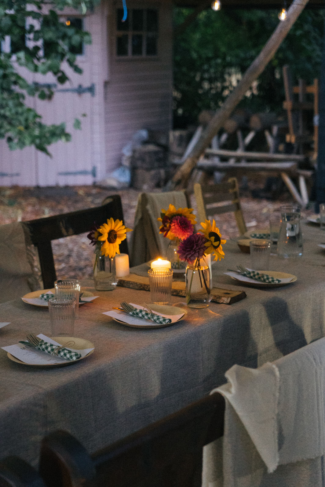
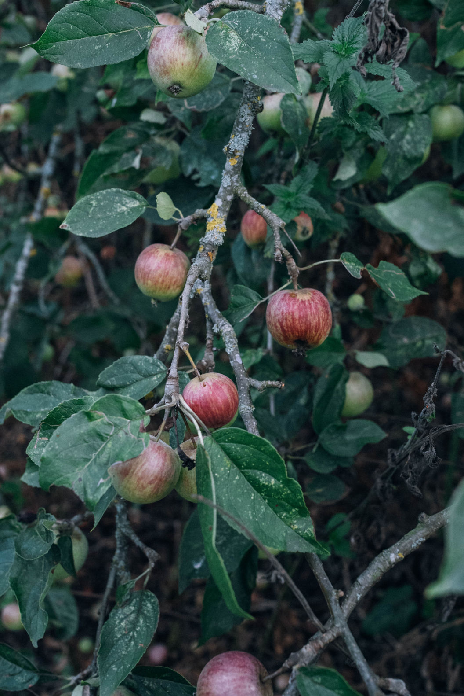
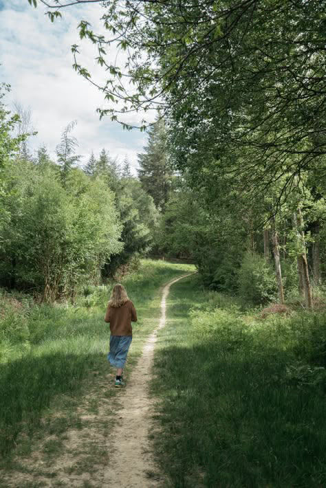
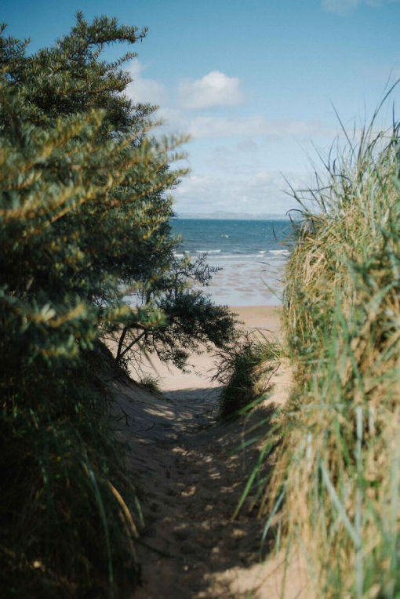
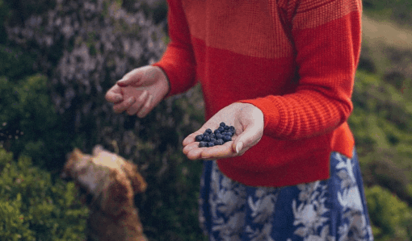

Hi! We're Katy and Eugene from Munjiri Videos, a UK videographer team specialising in story-driven UK video production for businesses, charities and organisations. We combine strategy, filmmaking and storytelling to create authentic videos that help your audience understand, trust and connect with your work. We handle the entire process, from planning to final delivery, so you can focus on the work you love.


Creating videos requires more than simply filming. It requires a clear message, a good story and a production process that makes the experience simple.
You might be wondering:
What should we actually say?
Will the video feel authentic to our brand?
How do we make sure it's worth the investment?
Will filming disrupt our team?
How do we create something people actually want to watch?
A video should do more than showcase your business.
It should tell a story your audience understands and feels connected to.
Strategy before filming
We don't just arrive with cameras and start recording.
We take the time to understand your business, your audience and what you want your video to achieve, so every shot has a purpose.
Stories people actually connect with
Your customers don't want another generic corporate video.
We focus on real stories, real people and authentic moments that show what makes your brand different.
A stress-free filming experience
From planning locations and schedules to guiding people who aren't comfortable on camera, we make the process simple.
You can focus on running your business while we handle the production.
Professional quality without the confusion
Great video comes from more than expensive equipment.
It comes from storytelling, sound, lighting and editing working together.
We’re Katy and Eugene videographers and a two-person video production team helping thoughtful brands and organisations share their stories through authentic, cinematic films.
With over 8 years of experience across Portugal, South Africa, the UK and Kenya, we’ve created videos for independent businesses, charities and global organisations including CNBC and the Obama Foundation.
Our approach is simple, we combine documentary-style storytelling, strategy and beautiful visuals to create videos that feel true to you, without the stress of figuring out what to say, how to film, or how to connect with your audience.
You focus on your work. We’ll help you tell the story.


Our UK video production process combines strategy, storytelling and filmmaking to create videos from the first idea to final delivery.
Great videos aren't just made on filming day. The strongest stories come from understanding your goals, planning carefully, and combining strategy with creativity.
1. Discover & Define
Before picking up a camera, we take time to understand your business, your audience and your goals. We uncover what makes your story worth sharing and define the message that matters most.
2. Plan & Prepare
We turn ideas into a clear production plan, shaping the story, organising logistics, locations, filming details and interview questions so everything runs smoothly.
3. Film Naturally
Filming is about more than cameras and lighting. We create a relaxed environment where you and your team can feel comfortable being yourselves, capturing genuine moments and stories that make your brand memorable.
4. Craft the Story
This is where everything comes together. We carefully edit your footage, combining visuals, sound, music and pacing to create a film that connects with your audience and keeps them engaged.
5. Deliver & Support
Once your film is complete, we provide everything you need to share it across your website, social media, presentations or marketing channels. We also help you understand how to get the most value from your video.
From the first conversation to the final film, our goal is simple: create authentic, story-driven videos that help your audience understand who you are and why you matter.


“Working with Katy from Munjiri Videos has been a great experience from start to finish. She understood what I was looking for straight away, and guided me (as someone new to commissioning video) content through deciding what to include and creating a script, and made me feel as relaxed as possible during the filming. It was such a pleasure working with her, and the results are fantastic- just what I was looking for. I wouldn’t hesitate to hire Munjiri Videos again, and really hope to work with Katy in the future.”
Flora Collingwood-Norris, Collingwood-Norris
"Katy did a superb job and rapidly understood what we were trying to achieve and provided excellent ideas about how to create a stunning visual feast, backed up by a perfectly judged soundtrack and a compelling narrative. She made great use of a range of film making techniques to highlight the unique features of Embo House and its location, creating an atmosphere which fully chimes with our target clientele. She was innovative and flexible in her approach, but also very focused on getting the detail and message right. Last, but not least, Katy was fun to work with despite the need to complete the project in a short, intense time-frame. We can not recommend her highly enough."
Ginny Knox , Embo House
“Working with Katy was a great experience and also really fun! She went the extra mile to help me achieve everything I wanted to include in the film. She is so professional but also very easygoing and importantly was able to help me to feel relaxed during filming. I am really happy with the results and would highly recommend Munjiri videos. ”
Sarah Rueger, Amaranthine Skincare
“Despite the fact that the situation was different to what we’d imagined, Katy was fantastic at taking my brief and totally running with it. She never made a fuss, she just did what she could and completely blew our minds with the work that she produced – goose bumps and wet eyes all round PB World!”
Claire Wouters, Pic's Peanut Butter
How much does a videographer cost in the UK?
UK videographer costs vary depending on filming time, editing requirements, locations and the final deliverables. Most professional video production projects are priced based on the level of planning, production and post-production involved.
What does a video production company do?
A video production company helps businesses create professional videos by managing strategy, storytelling, filming, editing, sound design and final delivery.
How long does video production take?
Most video production projects take several weeks from initial planning to final delivery, depending on the complexity of the film.
Do you work in London?
Yes if you are looking for video production in the capital you can find more details here.


Let’s make video simple and something you’re actually excited about! You can contact us here katy@munjiri.com


